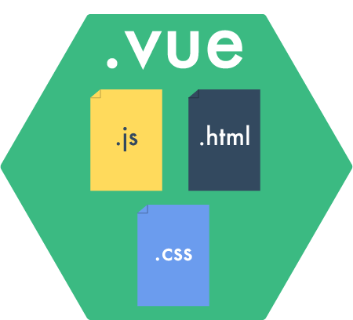
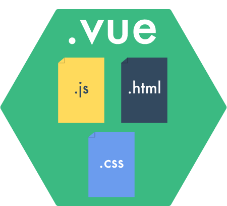

Writing efficient and reusable components
Writing efficient and reusable components


souvent écrits dans un seul fichier
découper un morceau de notre app
réutiliser à plusieurs endroits
<template> <p class="red">{{ msg }}</p> </template><script>export default { props: ['msg'] }</script><style scoped>.red { color: red; }</style>
donc seul fichier avec tout ça
template pour html
script pour js
style pour css (optionel)

ces composants sont ensuite des morceaux de l'appli
division hierarchique
réutilisation. Montrer sur Schéma
Reusable
meme fonctionnement
qui s'adapte
Reusable
- Replicable üëê
- Agnostic ü§ñ
- Configurableüîß
certaines vont ensemble Cnf + Adap
Replicable
- Within a project: üôÇ
- Anywhere: üòâ
relatif au scope du component
replicable dans un projet -> reutilisable au sein
d'un meme projet
-> moyen reusable
ça veut pas dire que ce n'est pas bien
c'est peut être pragmatique de le faire
Async data ⏳
activatehook- Manual in
readyhook
Async data ❌
<async-comp></async-comp>activate (done) { this.$http.get('/data').then(response => { // ... done() }, errorHandler) }
ok dans 1 projet
mais peut pas changer d'ou viennent les données
Async data ✅
<async-comp :promise="dataPromise()"></async-comp>methods: { dataPromise () { return new Promise((resolve, reject) => { // ... }) } }
Async data ✅
props: {
promise: Promise
},
activate (done) {
this.promise.then(done)
}
Parent communication üì§
syncmodifierv-modelin 2.0
Parent communication ❌
<modal-box :close="messageClose" > </modal-box>methods: { messageClose (response) { if (response) this.continue() else this.abort() } }
a ne pas faire
methode executé par le fils TODO analogie marrante a trouver
Parent communication ✅
<modal-box @close="messageClose" > </modal-box>// modal-box this.$emit('close', info)
envoi un event
fais ses modif a lui
event peut etre ignoré
Commanding a Component üì•
props$broadcast$refs
declancher actions
ex: l'affichage d'une modale
Commanding a Component ❌
props: { show: Boolean }watch: { show () { // ... } }
Commanding a Component ✅
// modal-box methods: { show () { // ... } }<modal-box v-ref:modal></modal-box>// Parent this.$refs.modal.show()
Efficient
Efficient ⚡️
- Fast to configure
- Fast to adapt
Using slots
<modal-box>
<p>Text</p>
</modal-box>
transclure du contenu du parent au fils
connu en ng
expliquer pour ceux qui connaissent pas
essentiel pour les components
slots
<!-- Modal Box template -->
<div class="modal">
<slot></slot>
<button @click="close">Close</button>
</div>
Default slots
<!-- Modal Box template -->
<div class="modal">
<div class="modal__text">
<slot>
Text
</slot>
</div>
<button @click="close">Close</button>
</div>
Using multiple slots aka named slots
Default slots
<!-- Modal Box template -->
<div class="modal">
<div class="modal__title">
<slot name="title">
Title
</slot>
</div>
<div class="modal__text">
<slot name="text">
Text
</slot>
</div>
<button @click="close">Close</button>
</div>
Improving slots with props
Improving slots with props
<modal-box title="Title">
</modal-box>
props for state
<contact-card :contact="contact">
</contact-card>
ex mdl-card
on en refait une en redefinisant les slots
reutilise en passant des props
Computed vs Filters ❌
Computed vs Filters ✅
<li v-for="user in filteredArray"> {{ user | json }} </li>computed: { filteredArray () { return _.sortBy(this.users, 'name') } }